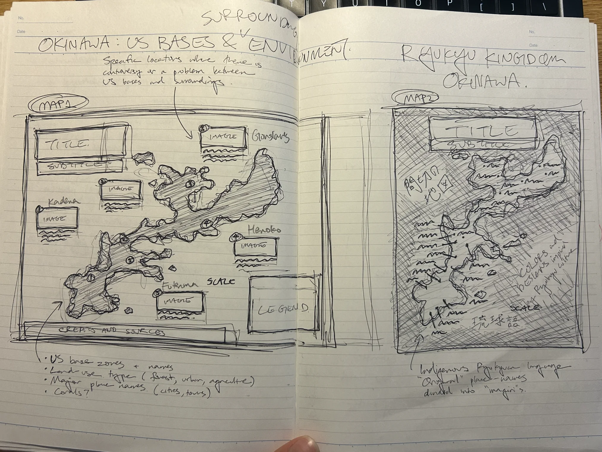
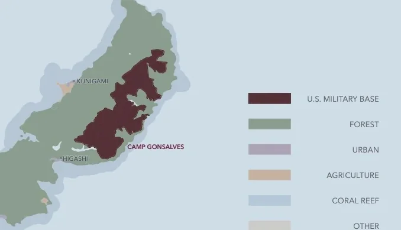
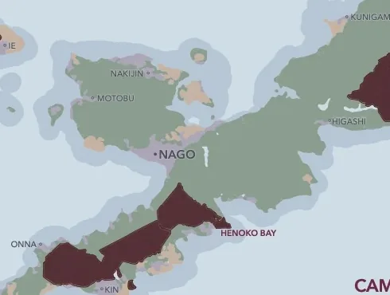
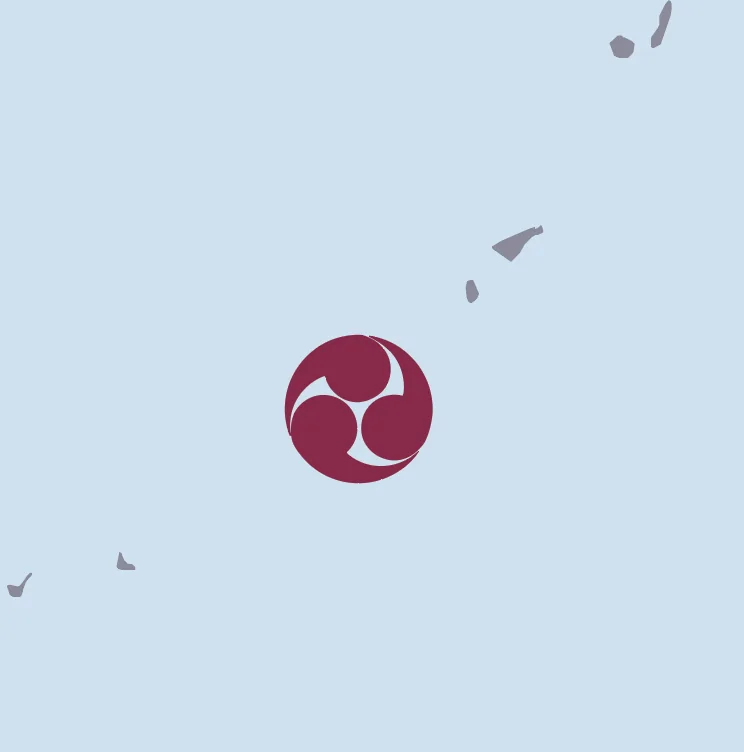
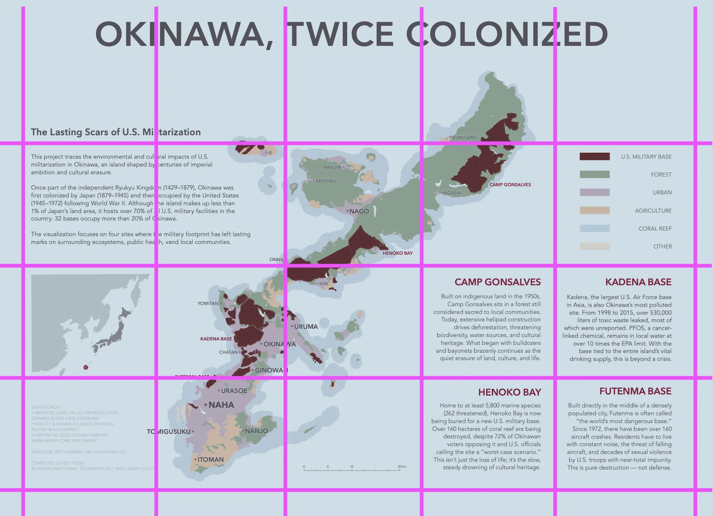
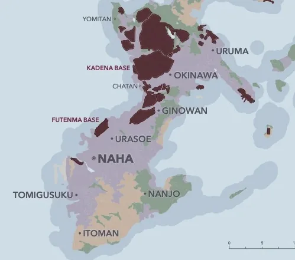

Okinawa, Twice Colonized
U.S. military bases cover a large part of Okinawa. I mapped them together with the forests, farmland, towns and coral reefs around them.


At a glance
- Context
- Final project for Cartography (GEOG 0217), Middlebury College, which I kept developing on my own. Shown at NACIS 2025 in Louisville, Kentucky: Map Gallery and student competition.
- Role
- Research, data selection, GIS processing, map design, writing, English and Japanese editions
- Advisers
- Jeff Howarth, Jae Jung (Katie) Heo
- Tools
- QGIS, Adobe Illustrator
- Data
- JAXA EORC 10 m land cover (2020) · Man & Palmer, Overseas Military Bases (2022) · UNEP-WCMC warm-water coral reefs (2025) · JGD2011 (EPSG:6668)
- Skills
- Thematic mapping, generalization, visual hierarchy, colour, typography, bilingual layout
Okinawa Island is less than 1% of Japan's land, yet it hosts over 70% of all U.S. military facilities in the country. I wanted one map that makes that footprint impossible to miss, and shows what it sits on: forest, farmland, towns, reef. A viewer standing a few feet away in a gallery should get it at a glance, then find four places that tell the longer story.
How it was made
Behind the map
A question, then a title
It started with a family trip to Okinawa in 2017. Years later, for my final cartography project, I went back to it. The pitch in my planning notes: visualize the tension between military strategy and environmental preservation. Where are the U.S. bases, and where do they overlap with forest, farmland and coral? The point I wrote underneath was blunter: show how the bases disrupt ecological systems and threaten Indigenous land and culture.
I planned for a wide audience, from high schoolers to adults interested in geography, Indigenous sovereignty, demilitarization and environmental justice. Most wouldn't know Okinawa's geography or history. That produced a list of musts, and the first one was where are the bases? It must be instant. I also wrote down the two ways it could fail: overlays too cluttered to read, and colours that colour-blind viewers couldn't tell apart. The map was going on a gallery wall, seen from a few feet away by people scanning casually.
Then the title. Okinawa was once the independent Ryukyu Kingdom; Japan annexed it in 1879, the United States occupied it from 1945 to 1972, and the bases stayed. “Twice colonized” says that before the viewer reads a single label, and the subtitle, The Lasting Scars of U.S. Militarization, names the impact. I went through many versions and kept this one because it is direct, personal and historically loaded: why before where.
Two maps in one notebook
I started on paper. The left page is Map 1: the bases and their surroundings, with four contested sites, image boxes around the island, and a list of the layers it would need: base zones, land use, major place names, and “corals?”, which I wasn't sure about yet. The right page is Map 2, a different idea: Okinawa as the Ryukyu Kingdom, with Indigenous Ryukyuan place names, divided into its old magiri districts. My notes called it reclaiming toponyms: letting Okinawa speak as a place full of history and culture, not just a base.
I chose Map 1, because the argument about the bases needed the space. Map 2 didn't disappear entirely: its note about colours and designs inspired by Ryukyu culture came back in the final palette and the locator mark. The corals made it in too. The photo boxes did not.

What the map leaves out
Finding the data was its own search. My list included Okinawa Prefecture's open data on military land, a U.S. Department of Defense installations dataset (the link was dead), Japan's Biodiversity Center for vegetation and coral, GSI's Global Map for roads and boundaries, the Overseas Military Bases dataset, and JAXA's 10 m land cover. The last two built the map, with coral from UNEP-WCMC.
JAXA's land cover arrives as numbered classes, so I regrouped them by story. Built-up became urban. Greenhouses, paddy fields, cropland, sugarcane and pineapple became agriculture. Evergreen broadleaf, evergreen needleleaf and mangrove became forest. Bare land and solar panels became other.
The map shows only the main island. The smaller islands were cut for focus, not for lack of data. Of everything available, I kept what the story needs: forest, urban and agriculture, plus coral reef. That's enough to show what's being lost, taken or built over. More classes would have diluted the point.
The legend follows the same logic. It's ordered by story, not alphabet: military first, then forest (what's being taken), urban, agriculture and coral. The projection is JGD2011 (EPSG:6668), which keeps Okinawa's shape accurate.

Five places, four stories
Polygons show where the bases are, not what they do. So I researched the places where they collide with land and people. My notes list five: Henoko Bay, where a new Marine base is being built over coral reef in dugong habitat; Iejima, where the U.S. military seized farmland in 1955; Camp Gonsalves, in the Yanbaru forest, a UNESCO World Heritage site, where helipad construction meant clearing; Kadena Air Base, where PFAS contaminates the water around the base; and Camp Kinser, with a history of chemical spills.
The final map tells four stories: Camp Gonsalves, Kadena and Henoko Bay from that list, plus Futenma, a base in the middle of a dense city. Each got about eighty words. I researched long and wrote short, keeping the numbers that carry weight: at least 5,800 marine species in the waters off Henoko; PFOS near Kadena at over ten times the EPA limit.
Fewer vertices, quieter coast
The coastlines and land-use polygons came in with far more vertices than the eye could process at this scale. With Professor Howarth's help, I simplified them, partly with code and partly by hand. The map is about relative impact, not GPS precision, so detail that didn't serve that went.
The same rule applied to everything else. There's no hard stroke tracing the coastline; the land blends into the sea. Only major cities, plus a few villages in the north where there are no cities, are labeled. When a label sat too close to a border or coastline, I nudged it.

Colours from kimono dye
I built a digital reference board of maps I admired, by Tom Patterson, Margaret Pearce and William Bunge among others, next to photographs of traditional Okinawan kimono fabrics. The palette came from the fabrics. It ties the map to culture and memory rather than to a default GIS ramp.
My first pull from the references was bright: red, gold, teal, indigo and olive, sampled straight from photographs of Okinawan textiles and dance costume. The final palette keeps that family but mutes it.
Only the bases are fully saturated: one deep red, loud and unavoidable. Everything else is toned down and differs in both hue and value, so the map doesn't rely on red-green contrast alone. For type sizes and balance, I made forensic style sheets of Katie Heo's maps.
First pull from the references
- Red
- Gold
- Teal
- Indigo
- Olive
Final palette
- U.S. military base
- Forest
- Urban
- Agriculture
- Coral reef
- Sea

A grid nobody sees
Everything sits on a 5 × 4 grid. The invisible lines hold the pieces in place, so nothing needs a box around it. The eye enters at the title, moves left to the introduction, drops to the locator map, crosses to the island, and ends at the four site stories. The legend waits top right: visible, not shouting. Sources sit bottom left, where people look last.
The layers follow the same hierarchy. Military zones on top, land cover beneath, coral fading below both, labels floating just above everything. The layer order is the narrative.

Type that knows its rank
One typeface, Avenir, throughout. Size does the ranking: the capital, Naha, is largest, then cities like Itoman and Uruma, then villages. Base names are small but red and bold, the same red as their polygons and their headings in the text, so the eye connects all three.
Labels went on last but take priority. None sit on busy textures or high-contrast edges; where that couldn't be avoided, I used knock-outs. I followed Eduard Imhof's basics, and broke them only when clarity demanded it.

From callouts to direct labels
The early digital version worked like a diagram: four numbered sites, each tied by a line to a paragraph on the right, with the legend tucked under the introduction. Fine at a desk, slow on a gallery wall. The argument didn't change. The way the map delivers it did.
I cut the callout lines and labeled Camp Gonsalves, Kadena, Henoko Bay and Futenma directly on the map. Their stories became four text blocks to the right and below. I moved the legend, refined the locator inset, and gave the map and the text separate jobs: the map shows the island-wide pattern; the text explains the four places.

Done, not due
I kept editing until the map felt finished, not until the deadline hit: until the visual rhythm and tone felt balanced, and the main points landed. Then I made the Japanese edition. It had been in the plan from the start; my notes ask, “how about making an English map but also a Japanese one???” Now the map reaches readers in both languages. Both editions are at the top of this page. The map hung in the NACIS 2025 Map Gallery in Louisville and was entered in the student competition.
Credits & sources
- JAXA EORC (2020). High-Resolution Land Use and Land Cover Map, 10 m resolution, Okinawa Island.
- Man, C. Y. & Palmer, D. A. (2022). Overseas Military Bases Dataset.
- UNEP-WCMC (2025). Ocean+ Habitats, warm-water coral reef dataset.
- Cartography (GEOG 0217), Middlebury College. Advised by Jeff Howarth and Jae Jung (Katie) Heo.
- Design principles drawn from A Pattern Language (Christopher Alexander et al.) as taught by Jeff Howarth, and from Eduard Imhof on label placement.
- Shown at the North American Cartographic Information Society (NACIS) Annual Meeting, Louisville, Kentucky, October 2025.